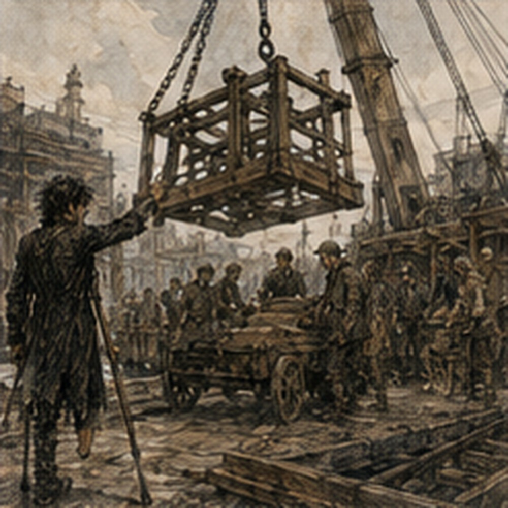

The load test passed. That mattered later. At the time, it was simply one more thing done correctly. I reached the west river yard before second bell because Ressa had told me not to be early and I had interpreted that as a personal attack.
The river was gray under a brightening sky. Barges sat low against the quay, ropes wet from spray. The mill frame waited on the nearest one exactly where it had been yesterday. Iron and oak. Heavy. Not interesting by itself. The interesting part was everything around it.
Marn had the fixed hoist awake already. The yard crane was not really a crane in the later sense. Timber mast. Crossbeam. Iron wheel. Chain. Two lines. Counterweight box. Enough mechanical advantage to move things that had no business being moved by six men and optimism.
Ressa stood under it with a chalk stick behind one ear. Dorn was beside the heavy cart. The cart was empty. That was about to change. Ressa saw me.
“Greg.”
“Ressa.”
“You walk it?”
“Not yet.”
“Good.”
Apparently I could still surprise people. She pointed at the yard lane.
“Closed from river gate to west shed. Harl owns lane. Marn owns hoist. I own rigging and go. Dorn owns cart. You own clearance and stop.”
“Anyone stops.”
“Anyone stops.”
“Only you go.”
“Yes.”
Good. Harl was a square man in a yellow cap standing at the yard gate. He had two workers with him and looked like he had been born annoyed by carts. He raised one hand. Lane closed. No pedestrians. No freight crossing. No children playing numbered chalk games under suspended iron. Professional. Ressa inspected the rigging. Not quickly.
She checked each sling by hand, then each hook, then the spreader bar, then the frame attachment points. She made one worker replace a pin because she disliked how the keeper sat. The old pin was probably fine. Probably was not enough. I liked her. Marn tested the hoist unloaded. Up. Hold. Down. Brake. Again with the counterweight engaged.
Dorn checked the cart wheels, axle pins, bed blocks, steering tongue, and chocks. Then the timber plates. The drainage channel crossed under the yard lane at an angle. Stone sides below. Heavy timbers above. Two thick plates had been laid over the section where the cart's right wheels would cross. Yesterday I had asked about them. Today they tested them. Not with a man jumping.
Not with a hammer. A yard wagon arrived loaded with iron billets. Marn looked at me.
“Expected wheel load plus a quarter.”
“How measured?”
“Billets weighed at receiving.”
“Cart distribution?”
Dorn answered.
“Close enough to ours once frame is seated. Test wagon rear axle slightly worse.”
“Plate position?”
Ressa pointed at chalk marks on the timber.
“Wheel path matched.”
Good. The test wagon rolled onto the plates. Stopped. Stayed. Marn crouched beside the channel. No visible movement. Dorn checked plate edges. No lift. They rolled forward until the rear wheel sat over the second plate. Stopped. Stayed. Backed once. Forward again. The timber creaked. Timber did that. No crack. No shift.
Marn drove a chalk line across plate and stone, then checked it after the wagon rolled off. Unbroken.
“Pass,” he said.
Ressa looked at Dorn.
“Cart?”
“Ready.”
Marn.
“Hoist?”
“Ready.”
Harl.
“Lane?”
“Closed.”
Then me.
“Clearance?”
“Walk first.”
She nodded. I walked. My position from yesterday was marked beside the cart approach, just outside the right rear wheel line. From there I could see the frame's lower west corner as it came off the barge and the cart's right side as Dorn brought it under. Blind interface. Not truly blind. Blind to everyone else at the moment they needed it.
I had a clear escape path behind me toward the open lane. No stacked material. No wall. No rope. Good. Second position after the frame settled was farther forward, near a waist-high stone bollard that protected the hoist base from carts.
From there I could watch the frame corner clear the bollard while Dorn began the first turn. Yesterday's dry run had put me there. I checked again. Three steps backward to open yard. Two sideways. No obstruction. The timber plates began six feet beyond the bollard. I would move before the cart reached them. Good. I looked up. No overhead line in my path.
Down. No loose chock. Ressa said, “Satisfied?”
“No.”
She waited. I looked again. Then smiled.
“Yes.”
“Better.”
We started. The first lift was boring. Excellent. Marn took tension. Ressa watched the slings settle.
“Hold.”
Marn held. Ressa walked the frame. No twist. No sling crawl.
“Up six.”
The frame rose six inches from the barge bed. Stopped. Stayed. The barge moved under it. Not much. River. Ressa waited for the motion to settle.
“Up.”
Marn lifted. The frame came clear. Slow. Heavy enough that the hoist lines spoke in small metallic sounds. Normal. Dorn brought the cart forward. I watched the lower west corner.
“Clear.”
Ressa did not say go because I had said clear. She checked her side. Marn checked line.
Then:
“Go.”
The cart moved. Two feet.
“Hold,” I said.
Dorn stopped. The frame corner had begun to rotate toward the cart's rear upright. Not collision. Not yet.
“West corner closing. Two inches if you continue.”
Ressa looked. Could not see my angle.
“Dorn, half left.”
He adjusted. I watched.
“Clear.”
Ressa checked.
“Go.”
The cart moved. Frame descended. Blocks took weight. One corner touched first.
“Hold,” Ressa said.
Marn held. Ressa corrected the sling. Dorn shifted one bed block half an inch. Nobody put fingers under anything. Competent. The frame settled. Hoist retained partial load. Ressa checked all four bearing points.
“Down two.”
Marn lowered. More weight onto cart. Dorn watched the suspension.
“Good.”
“Down two.”
Again. The cart creaked. Normal. The right rear wheel compressed slightly into the yard dirt. Not the plates. Just dirt. Dorn looked.
“Good.”
The frame was seated. Ressa left the hoist carrying enough load to stabilize while the temporary chains went on. I moved to second position. Stone bollard beside me. Open escape behind. The frame's west corner would pass three feet away. Then I would move before the drainage crossing. Simple. Chains secured. Ressa checked. Marn eased more load off the hoist. Cart took it.
Stayed level.
“Full cart,” Dorn said.
Marn kept the line connected but slack enough not to steer. Ressa walked around once. Then again. She looked at me.
“Clearance?”
“Clear.”
“Dorn?”
“Ready.”
“Marn?”
“Line ready.”
“Harl?”
“Lane clear.”
Ressa raised her hand.
“Go.”
Dorn moved the cart. Slow. The frame corner approached the bollard. Three feet. Two. Eighteen inches. Plenty. The cart's front axle began the shallow turn. The rear tracked inward. Frame corner came closer.
“Hold.”
Dorn stopped. Immediately. Everyone stopped. The corner sat perhaps nine inches from stone. Ressa looked at me.
“Why?”
“Rear tracking more inward than dry cart.”
Dorn looked down his side.
“Weight.”
Ressa nodded. Not surprising. Different load. Expected.
“How much correction?” she asked Dorn.
“Two inches left at tongue.”
I checked my clearance.
“That opens me.”
Ressa looked at Marn.
“Line?”
“Fine.”
“Dorn. Two.”
He adjusted. The corner moved away from the bollard.
“Clear.”
Ressa checked.
“Go.”
We moved. I stepped backward into open yard as planned. The cart passed the bollard. First interface done. I moved toward the drainage crossing. My next observation point was on the river side of the lane, ahead of the right rear wheel. From there I could see both plate edges and the cart bed. Dorn slowed without being told. Good. The front right wheel approached the first plate.
I checked chalk line. Still aligned. Plate flat.
“Clear.”
Ressa checked the frame.
“Go.”
Front wheel rolled onto timber. Creak. Normal. Across. No shift. Front rearward? No. Cart had two axles. Right rear wheel next. This was the heavier wheel position. The test had matched it. Dorn slowed further. I crouched enough to see plate edge. Not close. Four feet. Wheel climbed. Timber compressed. A fraction. Expected. Chalk line stayed whole.
“Clear.”
Wheel reached center. Then the frame moved. Not much. A small roll toward river. The cart bed leaned perhaps half an inch. Ressa said, “Hold.” Dorn stopped. Marn took line tension immediately. The frame stopped moving. Everyone did the right thing. I looked at the plate. Chalk line broken. Not across the plate. At the stone edge beneath it.
“Plate moved.”
“How much?” Ressa asked.
“Quarter inch. Maybe less.”
Dorn did not move. Marn held tension. Ressa came around without entering the wheel line. She looked.
“Back?” Dorn asked.
“No.”
Good. Backing could load the shifted edge again.
“Can you take more frame?” she asked Marn.
“Yes.”
“How much?”
“Enough to lighten cart. Not enough to lift clean from here without side pull.”
Ressa thought. Nobody hurried. The frame was stable. The cart was stopped. The wheel sat on the plate. Marn's line had tension. The plate had moved less than an inch. Problem. Bounded. Ressa said, “Take a quarter load.” Marn tightened. The hoist line rose. The frame lifted fractionally against its chains. Cart suspension relaxed. Dorn watched the wheel.
“Better.”
The plate did not move. Ressa looked at me.
“Can you see under the river edge?”
“Not from here.”
“Don't move yet.”
Good. Harl brought a long-handled inspection mirror from the yard shed. Of course they had one. He handed it to Ressa. She slid it along the ground from outside the wheel line. Looked. Her face changed. Not panic. Attention.
“Marn.”
“Yes.”
“Hold exactly.”
“Holding.”
“Dorn, brake stays.”
“Stays.”
She handed me the mirror.
“Look.”
I did. Under the plate, one of the stone channel shoulders had not moved. The timber had. Not broken. Its underside had split along a dark seam near the river edge. Old seam. Dark wood inside. Not fresh pale fiber. The test had loaded it. It had held. Now it had opened.
“Internal split,” I said.
“Looks old.”
“Yes.”
Dorn said, “Test wagon didn't open it.”
“No.”
Ressa looked at the frame. Then cart. Then plate.
“We unload enough to move cart back without that wheel carrying full weight.”
Marn said, “Can take more, but line angle worsens as cart backs.”
“How far before bad?”
“Two feet.”
Dorn said, “Need eighteen inches to get wheel off plate.” Ressa nodded. There. Plan. Marn takes more frame. Cart backs eighteen inches. Wheel leaves damaged plate. Reset. Replace plate. Continue. Reasonable. I checked clearance. The frame corner was now farther from the bollard. No issue. The cart's left side had open lane. Right side drainage channel.
My position ahead and river side was not useful for backing.
“Move me?” I asked.
Ressa pointed behind the cart, west side.
“Rear corner. Watch frame against hoist line and left wheel. Stay outside wheel path.”
I moved. Walked around, not through. Good. My new position was near a stack of empty pallets. Open enough. I could see the left rear wheel and the frame's upper corner against the hoist line. Dorn could not see that corner while steering backward. Blind interface. Mine. Ressa walked the path.
“Greg?”
“Clear for eighteen.”
“Marn?”
“Can take another quarter.”
“Take it.”
Hoist tightened. The frame rose perhaps half an inch. Cart suspension lifted. The damaged right plate stayed still. Ressa checked chains.
“Dorn?”
“Ready.”
“Greg?”
“Ready.”
“Harl?”
“Lane clear.”
Ressa raised her hand.
“Back slow.”
The cart moved. An inch. Two. The right rear wheel began rolling backward across the plate. I watched left wheel. Clear. Frame corner. Clear. Hoist line. Clear.
“Clear.”
Six inches. Eight. Then the right plate dropped. Not broke. Dropped. The river-side end fell perhaps four inches into the drainage channel as the split underside sheared away from something beneath it. The right rear wheel fell with it. The cart snapped sideways. Dorn shouted. Ressa shouted, “STOP.” Dorn had already stopped. Marn's brake caught. The frame swung. Not much. Enough. Toward me.

I saw the upper corner move. I stepped back. Correct. Open escape. Except the pallet stack was not where it had been yesterday. It was six inches farther into the lane. Not enough to block me. Enough that my heel hit the bottom board. I turned instead of continuing backward. Still correct. The frame corner was not going to hit me. The cart was.
Not the whole cart. The left rear wheel had unloaded when the right side dropped. The axle twisted. The cart bed kicked left as the suspended frame pulled against the hoist line. I saw the iron-bound rear corner coming toward the pallet stack. Toward my hip. Three feet. Maybe less. No time to run forward through the wheel line. No time to climb.
Sideways was clear except the pallets. I cast. Coin-sized Barrier. Not against the cart. Too much load. Against the top pallet slat. Directional. One breath. The slat snapped away from me instead of catching my coat as I turned. Good cast. Clean. Useful. I moved. Almost enough. The cart corner missed my body. The wheel did not. There was a sound. Wood first.
Then something lower. My left leg disappeared beneath the axle line. Not disappeared. Wrong word. Pressure. Impossible pressure. Then no pressure because I was on the ground. I did not remember falling. Someone screamed. Maybe me. The cart had stopped. The frame had stopped. Marn was holding it. Ressa was beside me but not touching the cart.
“Greg.”
I looked at her.
“Don't move.”
“I wasn't planning to.”
My voice sounded normal. That was funny. I tried to look down. Ressa put a hand against my shoulder.
“Don't.”
Of course I looked. Left leg. Boot visible. Knee visible. Wrong angle below it. Cart wheel against the lower leg, not fully over it. Pinned between wheel iron and the stone lip beside the drainage channel. Blood. Not as much as expected. That was worse. Maybe. Could be compression. Could be arterial damage contained by the wheel. Could be nothing. No. Not nothing.
I knew enough medicine to be unhelpful.
“Don't lift the cart,” I said.
Ressa's face was very still.
“We aren't.”
Good. Dorn was on the other side. White. Not literally. Close.
“Marn?” Ressa called.
“Holding.”
“Can you hold ten minutes?”
“Yes.”
“Twenty?”
“Yes.”
“Do it.”
Harl was already running. He did not need to be told. Yard workers cleared space. One brought blocks. Ressa stopped him before he placed them.
“Not under load path. West side first.”
Competent. Everyone competent. My leg hurt. Then hurt more. Then changed. Hot. Cold. Pressure. My foot existed. I could feel the boot. Could I move toes? I tried. Ressa saw my face.
“Don't.”
“Checking.”
“Stop checking.”
“Hessa says that.”
“Good woman.”
I laughed. Bad choice. Pain climbed into my stomach. I stopped laughing. Dorn crouched where I could see him.
“Greg.”
“What?”
“Stay.”
“I am pinned under a cart.”
His mouth did something. Not smile. Almost. Good. I looked at the broken plate. From the ground I could see beneath it better. Stone channel. Timber plate. And under the timber, where I had expected stone shoulder, a short transverse support. Wood. Old. Black at one end.
“What is that?” I asked.
Ressa looked where I was looking.
“Don't care.”
“I do.”
“Later.”
There might not be later. No. Wrong. There would be later. I had Hessa in five days. Alden next week. No. Stop. Present.
“Support under plate,” I said.
Ressa's eyes flicked once. She saw it. The load test had passed because the plate had been supported. The old split had held under vertical load. Backing changed something. Or the support moved. Or water had rotted the end. Or the wheel edge had loaded the split differently. I was doing it again.
“Greg.”
Ressa.
“Present.”
“Yes.”
Footsteps. Fast. Hessa was not among them. Of course not. A yard healer arrived with two assistants and a man carrying a lifting jack. Not Hessa. Older woman. Gray sleeves. She knelt.
“Name?”
“Gregory.”
“Age?”
“Nineteen.”
That still sounded ridiculous.
“What happened?”
“Cart lateral shift. Left lower leg pinned between rear wheel and stone edge.”
She looked at Ressa. Ressa gave the operational version in ten seconds. Good. The healer touched my thigh. Knee. Not lower.
“Feel?”
“Yes.”
“Here?”
“Yes.”
“Here?”
“Yes.”
Then ankle through boot.
“Here?”
I waited.
“Pressure.”
“Pain?”
“Some.”
She looked at the wheel. Then at the blood.
“Do not lift until I say.”
Nobody argued. She cut my trouser leg above the boot. I looked at the sky. Bright. Annoyingly bright. Someone had moved the pallets. Good. The healer said something to her assistant about splints, binding, and the jack. Ressa answered questions. Marn kept holding the frame. Dorn kept the cart brake set. The operation had stopped. Perfectly. After the failure. That mattered too.
The healer leaned close.
“Gregory.”
“Greg.”
“Greg. We're going to take the cart off you. It will hurt.”
“It already does.”
“More.”
“Good sales pitch.”
She did not smile.
“Listen. When the pressure comes off, bleeding may increase. We are ready for that. You do not move unless I tell you.”
“Fine.”
“You may feel less before you feel more.”
“That sounds bad.”
“It is information.”
I liked her. Terrible timing. They blocked the cart. Not casually. Dorn and two yard workers placed cribbing under the frame side while Marn maintained hoist tension. The jack went under the axle where the healer approved. Ressa checked every placement. Nobody rushed. I wanted them to rush. They did not. Good.
The healer put a folded strap high around my thigh but did not tighten it. Ready. Not used. Yet.
“Greg.”
“Yes.”
“Look at me.”
I did.
“Lift.”
The jack turned. The wheel rose. One fraction. Pain became white. Not color. Absence. Then everything returned at once. I made a sound. Someone held my shoulders. Not Ressa. Assistant.
“Again.”
Wheel rose. Blood came. The healer moved. Fast. Pressure. Cloth. Hands.
“Higher.”
The strap tightened around my thigh. Fuck. Fuck. Fuck. I stopped understanding words for a while. When I came back, the wheel was no longer touching me. My leg was wrapped in more cloth than seemed possible. The boot was gone. I could not see the lower leg. Good. I did not want to. The healer's hands were red. Bad.
“Greg.”
“Yes.”
“We're moving you.”
“Where?”
“Guild infirmary first. Surgeon is being called.”
“Surgeon.”
“Yes.”
That word mattered. I knew why.
“No.”
Her face changed slightly. Not pity. Professional recognition.
“Your leg is badly crushed.”
“How badly?”
“I cannot tell you what can be saved here.”
There. Not gone. Not safe. Unknown. I hated unknown.
“Foot?”
“We have bleeding controlled.”
“That wasn't the question.”
“I know.”
“Can you feel pulse?”
She paused. Too long.
“Not reliably.”
Fuck.
“Could be compression.”
“Yes.”
“Could be swelling.”
“Yes.”
“Could be arterial.”
“Yes.”
“Bone?”
“Yes.”
“How many?”
“Greg.”
“How many?”
“At least both lower-leg bones.”
At least. Good phrase. Terrible phrase.
“Open?”
“Yes.”
I closed my eyes. Not because I was afraid. I was afraid. Fine. Because the sky was too bright. Ressa said my name. I opened them. She stood beside the litter. There was blood on one knee of her trousers. Not hers.
“Frame?” I asked.
“Stable.”
“Cart?”
“Stable.”
“Everyone else?”
“Fine.”
Good. That mattered. Dorn stood behind her. He looked worse than me. Probably not objectively.
“Stop early,” he said.
I stared.
“What?”
“You did.”
I understood. The recommendation. He stops early and doesn't grab things. I had stopped. Ressa had stopped. Dorn had stopped. Marn had stopped. The plate had failed anyway. Then we had made another plan. That plan had made sense too. I looked toward the drainage channel. The broken timber plate lay tilted into it. Underneath, the old black-ended support was visible now.
Marn was staring at it. Not me. The thing. Good. Someone would learn what it was. Later. The healer said, “Move.” They lifted the litter. Pain moved with me. I hated that. The yard tilted. River. Hoist. Frame. Cart. Pallets. My boot lying on its side near the drainage channel. Newly repaired eyelet. That was irritating. I laughed once. The healer looked down.
“What?”
“Boot.”
She looked. Did not understand. Good. They carried me through the lane Harl had kept clear. Of course he had kept it clear. The system still worked. Just not enough.